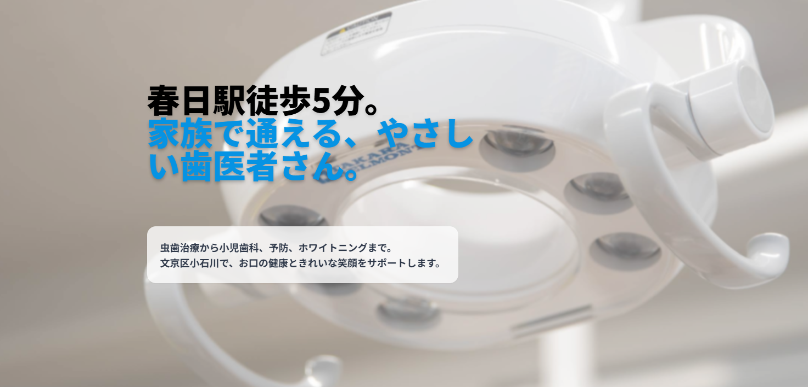

虫歯治療から小児歯科、予防、ホワイトニングまで。
文京区小石川で、お口の健康ときれいな笑顔をサポートします。

富沢歯科は、東京都文京区小石川にある歯科医院です。
一般歯科・小児歯科を中心に、予防治療や歯周病治療、ホワイトニングなど、幅広いお口のお悩みに対応しています。
患者様とのコミュニケーションを大切にしながら、安心して通っていただける医院づくりを行っています。
春日駅から徒歩5分の通いやすい立地です。

小さなお子様からご年配の方まで、幅広い年代の患者様が来院されます。
明るい声かけや丁寧な対応を大切にしながら、地域の皆さまのお口の健康を支えるお仕事です。

歯科助手は未経験の方やブランクのある方も相談可能です。
受付業務や診療補助など、できることから少しずつ慣れていただけます。
歯科衛生士の方は、これまでの経験や資格を活かして働けます。

週1日から、1日3時間から相談できるため、家庭や子育て、プライベートとの両立もしやすい環境です。
土曜午後・日曜・祝日は休診のため、無理なく働きたい方にもおすすめです。


富沢歯科では、患者様が安心して通える歯科医院づくりを大切にしています。
受付での明るい対応、診療中のやさしい声かけ、清潔で落ち着いた院内づくり。
一つひとつの気配りが、患者様の安心につながります。
未経験の方も、ブランクのある方も大歓迎です。
地域に寄り添う歯科医院で、一緒に楽しく働きませんか。
富沢歯科クリニック 院長
富澤 一浩

春日駅徒歩5分・文京区小石川の富沢歯科クリニック。虫歯治療・小児歯科・予防ケア・ホワイトニングなど、ご家族皆様の歯科診療案内・ご予約はこちらをご覧ください。
| 住所 |
〒112-0002 東京都文京区小石川１丁目１３−１１ 岩井ビル3階 |
|---|---|
| 電話番号 | 03-3813-4063 |
| 診療時間 |
9:30～12:30 / 14:30～18:00 ※土曜は午前のみ診療 |
| 休診日 | 日曜・祝日 |